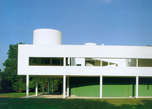
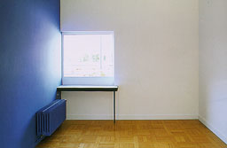
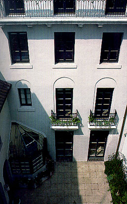
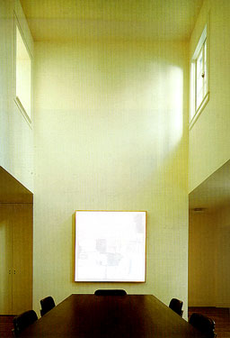
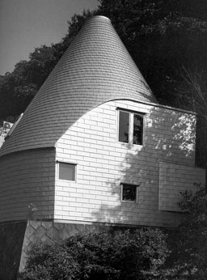
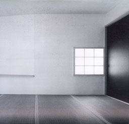

Villa Savoye, 1929, Poissy, France
Le Corbusier

Houses of the Century
Anatxu Zabalbeascoa |
Villa Savoye represents the Modern Movement.
The design was obtained by approaching the house as a machine
for living. Characteristic are the elongated horizontal strips
of windows and the use of pilotis to raise the construction off
ground level. On the picture on the right you see daylight coming
from a window close to the side-wall. According to this position
light brushes past this blue wall so that roughness on the wall
is easy to be seen. |
 |
Hatch House, New York, 1986
1100 Architect

1100 Architect
Pilar Viladas & Pat Morton |
This townhouse has had several owners and
needed to be reconstructed. Spaces had to be created of human
proportions. Also needed the building new services like air-conditioning.
A consistent ceiling height gave the original structure a monotone
character. New spaces were created out of a couple of old original
spaces. An example can be seen on the right photograph. The windows
in the originally upper level provide for daylight into the room
beneath. Direct daylight enters the room and reflects against
the walls so only indirect diffuse daylight reaches the table
on the floor. |
 |
|
House in Hayama, Hayama, Kanagawa, Japan, 1986-1987, Yutaka
Saito and AssociatesGA
Houses 25
A.D.A. EDITA Tokyo
|
This house is situated between hills near
Tokyo and has a view on the ocean. The house has the form of
a cone with a slope adjusted to the surrounding hills. The exterior
walls and roof are finished with a aluminium alloy. The inside
is finished in white plaster. In that way the architect has tried
to give the occupant a feeling of enclosure. The extreme high
ceiling (9.6 metres on the first floor and 7 on the second) are
softened by the whiteness. Windows are positioned in such a
way that the rays of the red, setting sun can enter the room.
This all gives the interior of the house a strong but also restful
character.
|
 |